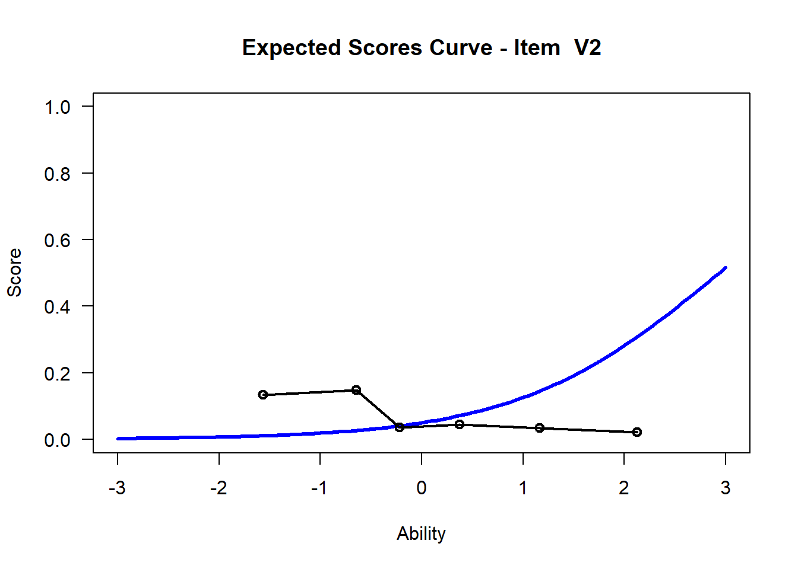

Chapter 3 The Rasch Model {Rasch}
set your working directory to the folder where you downloaded the CSV file.
1.Go to Session -> Set Working Directory -> Choose Directory
- install TAM and the WrightMap package
install.packages("TAM")
install.packages("WrightMap")
install.packages("plyr")Take a CSV from outside of R and read it in. This means that it is something you can now work with in R. The .csv file will be read in as something called a data frame or (dataframe). This is a type of object in R, that’s essentially a spreadsheet that your’re used to working with.
hls <- read.csv("hls_dic_scale.csv")3.1 See the first few rows and columns
## Hls1 Hls2 Hls3 Hls4 Hls5 Hls6 Hls7 Hls8 Hls9 Hls10 Hls11 Hls12 Hls13
## 1 0 0 0 0 0 0 0 1 0 0 1 0 0
## 2 1 0 0 0 1 0 0 1 0 0 1 1 1
## 3 0 0 0 0 0 0 0 1 0 0 0 1 0
## 4 0 0 0 0 1 0 0 0 0 0 1 0 0
## 5 0 0 0 0 0 0 0 1 0 0 1 1 1
## 6 0 0 0 0 1 0 0 0 0 0 1 1 1
## Hls14 Hls15 Hls16
## 1 0 0 0
## 2 0 0 1
## 3 0 0 0
## 4 0 1 0
## 5 0 0 1
## 6 0 1 0If you want to see view the data frame:
View(hls)Now we call the TAM library you installed in a prior step. This tells R to use the set of functions in available in TAM
3.2 Run the Rasch Model
This command runs a Rasch model on the selected data frame. mod1 is an object in R that holds the data from our Rasch model (along with a lot of other information). This is the main computation step, now we just ask TAM questions about this model.
Note that the object hls has to contain only items and no other information.
## ....................................................
## Processing Data 2019-11-26 22:17:49
## * Response Data: 317 Persons and 16 Items
## * Numerical integration with 21 nodes
## * Created Design Matrices ( 2019-11-26 22:17:49 )
## * Calculated Sufficient Statistics ( 2019-11-26 22:17:49 )
## ....................................................
## Iteration 1 2019-11-26 22:17:49
## E Step
## M Step Intercepts |----
## Deviance = 3865.5951
## Maximum item intercept parameter change: 0.385394
## Maximum item slope parameter change: 0
## Maximum regression parameter change: 0
## Maximum variance parameter change: 0.294655
## ....................................................
## Iteration 2 2019-11-26 22:17:49
## E Step
## M Step Intercepts |---
## Deviance = 3814.2391 | Absolute change: 51.356 | Relative change: 0.01346428
## Maximum item intercept parameter change: 0.151366
## Maximum item slope parameter change: 0
## Maximum regression parameter change: 0
## Maximum variance parameter change: 0.337861
## ....................................................
## Iteration 3 2019-11-26 22:17:49
## E Step
## M Step Intercepts |---
## Deviance = 3790.743 | Absolute change: 23.4961 | Relative change: 0.00619828
## Maximum item intercept parameter change: 0.11515
## Maximum item slope parameter change: 0
## Maximum regression parameter change: 0
## Maximum variance parameter change: 0.299433
## ....................................................
## Iteration 4 2019-11-26 22:17:49
## E Step
## M Step Intercepts |---
## Deviance = 3778.1872 | Absolute change: 12.5558 | Relative change: 0.00332323
## Maximum item intercept parameter change: 0.089508
## Maximum item slope parameter change: 0
## Maximum regression parameter change: 0
## Maximum variance parameter change: 0.24184
## ....................................................
## Iteration 5 2019-11-26 22:17:49
## E Step
## M Step Intercepts |---
## Deviance = 3771.5072 | Absolute change: 6.68 | Relative change: 0.00177118
## Maximum item intercept parameter change: 0.069355
## Maximum item slope parameter change: 0
## Maximum regression parameter change: 0
## Maximum variance parameter change: 0.184238
## ....................................................
## Iteration 6 2019-11-26 22:17:49
## E Step
## M Step Intercepts |---
## Deviance = 3767.8501 | Absolute change: 3.6571 | Relative change: 0.00097062
## Maximum item intercept parameter change: 0.054133
## Maximum item slope parameter change: 0
## Maximum regression parameter change: 0
## Maximum variance parameter change: 0.135809
## ....................................................
## Iteration 7 2019-11-26 22:17:49
## E Step
## M Step Intercepts |---
## Deviance = 3765.7453 | Absolute change: 2.1048 | Relative change: 0.00055893
## Maximum item intercept parameter change: 0.042817
## Maximum item slope parameter change: 0
## Maximum regression parameter change: 0
## Maximum variance parameter change: 0.098823
## ....................................................
## Iteration 8 2019-11-26 22:17:49
## E Step
## M Step Intercepts |---
## Deviance = 3764.4628 | Absolute change: 1.2824 | Relative change: 0.00034067
## Maximum item intercept parameter change: 0.034371
## Maximum item slope parameter change: 0
## Maximum regression parameter change: 0
## Maximum variance parameter change: 0.072062
## ....................................................
## Iteration 9 2019-11-26 22:17:49
## E Step
## M Step Intercepts |---
## Deviance = 3763.6398 | Absolute change: 0.823 | Relative change: 0.00021867
## Maximum item intercept parameter change: 0.027972
## Maximum item slope parameter change: 0
## Maximum regression parameter change: 0
## Maximum variance parameter change: 0.053213
## ....................................................
## Iteration 10 2019-11-26 22:17:49
## E Step
## M Step Intercepts |---
## Deviance = 3763.0897 | Absolute change: 0.5501 | Relative change: 0.00014618
## Maximum item intercept parameter change: 0.023032
## Maximum item slope parameter change: 0
## Maximum regression parameter change: 0
## Maximum variance parameter change: 0.04004
## ....................................................
## Iteration 11 2019-11-26 22:17:49
## E Step
## M Step Intercepts |---
## Deviance = 3762.7113 | Absolute change: 0.3785 | Relative change: 0.00010058
## Maximum item intercept parameter change: 0.019143
## Maximum item slope parameter change: 0
## Maximum regression parameter change: 0
## Maximum variance parameter change: 0.030779
## ....................................................
## Iteration 12 2019-11-26 22:17:49
## E Step
## M Step Intercepts |--
## Deviance = 3762.4457 | Absolute change: 0.2655 | Relative change: 7.057e-05
## Maximum item intercept parameter change: 0.016027
## Maximum item slope parameter change: 0
## Maximum regression parameter change: 0
## Maximum variance parameter change: 0.024166
## ....................................................
## Iteration 13 2019-11-26 22:17:49
## E Step
## M Step Intercepts |--
## Deviance = 3762.2571 | Absolute change: 0.1887 | Relative change: 5.015e-05
## Maximum item intercept parameter change: 0.013494
## Maximum item slope parameter change: 0
## Maximum regression parameter change: 0
## Maximum variance parameter change: 0.019339
## ....................................................
## Iteration 14 2019-11-26 22:17:49
## E Step
## M Step Intercepts |--
## Deviance = 3762.1218 | Absolute change: 0.1352 | Relative change: 3.595e-05
## Maximum item intercept parameter change: 0.011408
## Maximum item slope parameter change: 0
## Maximum regression parameter change: 0
## Maximum variance parameter change: 0.015728
## ....................................................
## Iteration 15 2019-11-26 22:17:49
## E Step
## M Step Intercepts |--
## Deviance = 3762.0243 | Absolute change: 0.0975 | Relative change: 2.592e-05
## Maximum item intercept parameter change: 0.009676
## Maximum item slope parameter change: 0
## Maximum regression parameter change: 0
## Maximum variance parameter change: 0.012959
## ....................................................
## Iteration 16 2019-11-26 22:17:49
## E Step
## M Step Intercepts |--
## Deviance = 3761.9537 | Absolute change: 0.0706 | Relative change: 1.877e-05
## Maximum item intercept parameter change: 0.008227
## Maximum item slope parameter change: 0
## Maximum regression parameter change: 0
## Maximum variance parameter change: 0.010785
## ....................................................
## Iteration 17 2019-11-26 22:17:49
## E Step
## M Step Intercepts |--
## Deviance = 3761.9024 | Absolute change: 0.0513 | Relative change: 1.363e-05
## Maximum item intercept parameter change: 0.007007
## Maximum item slope parameter change: 0
## Maximum regression parameter change: 0
## Maximum variance parameter change: 0.009045
## ....................................................
## Iteration 18 2019-11-26 22:17:49
## E Step
## M Step Intercepts |--
## Deviance = 3761.8651 | Absolute change: 0.0373 | Relative change: 9.92e-06
## Maximum item intercept parameter change: 0.005977
## Maximum item slope parameter change: 0
## Maximum regression parameter change: 0
## Maximum variance parameter change: 0.007628
## ....................................................
## Iteration 19 2019-11-26 22:17:49
## E Step
## M Step Intercepts |--
## Deviance = 3761.8379 | Absolute change: 0.0272 | Relative change: 7.24e-06
## Maximum item intercept parameter change: 0.005104
## Maximum item slope parameter change: 0
## Maximum regression parameter change: 0
## Maximum variance parameter change: 0.006461
## ....................................................
## Iteration 20 2019-11-26 22:17:49
## E Step
## M Step Intercepts |--
## Deviance = 3761.818 | Absolute change: 0.0199 | Relative change: 5.29e-06
## Maximum item intercept parameter change: 0.004362
## Maximum item slope parameter change: 0
## Maximum regression parameter change: 0
## Maximum variance parameter change: 0.005489
## ....................................................
## Iteration 21 2019-11-26 22:17:49
## E Step
## M Step Intercepts |--
## Deviance = 3761.8034 | Absolute change: 0.0145 | Relative change: 3.87e-06
## Maximum item intercept parameter change: 0.00373
## Maximum item slope parameter change: 0
## Maximum regression parameter change: 0
## Maximum variance parameter change: 0.004674
## ....................................................
## Iteration 22 2019-11-26 22:17:49
## E Step
## M Step Intercepts |--
## Deviance = 3761.7928 | Absolute change: 0.0106 | Relative change: 2.83e-06
## Maximum item intercept parameter change: 0.003192
## Maximum item slope parameter change: 0
## Maximum regression parameter change: 0
## Maximum variance parameter change: 0.003987
## ....................................................
## Iteration 23 2019-11-26 22:17:49
## E Step
## M Step Intercepts |--
## Deviance = 3761.785 | Absolute change: 0.0078 | Relative change: 2.07e-06
## Maximum item intercept parameter change: 0.002733
## Maximum item slope parameter change: 0
## Maximum regression parameter change: 0
## Maximum variance parameter change: 0.003405
## ....................................................
## Iteration 24 2019-11-26 22:17:49
## E Step
## M Step Intercepts |--
## Deviance = 3761.7793 | Absolute change: 0.0057 | Relative change: 1.52e-06
## Maximum item intercept parameter change: 0.00234
## Maximum item slope parameter change: 0
## Maximum regression parameter change: 0
## Maximum variance parameter change: 0.002911
## ....................................................
## Iteration 25 2019-11-26 22:17:49
## E Step
## M Step Intercepts |--
## Deviance = 3761.7751 | Absolute change: 0.0042 | Relative change: 1.12e-06
## Maximum item intercept parameter change: 0.002005
## Maximum item slope parameter change: 0
## Maximum regression parameter change: 0
## Maximum variance parameter change: 0.00249
## ....................................................
## Iteration 26 2019-11-26 22:17:49
## E Step
## M Step Intercepts |--
## Deviance = 3761.772 | Absolute change: 0.0031 | Relative change: 8.2e-07
## Maximum item intercept parameter change: 0.001718
## Maximum item slope parameter change: 0
## Maximum regression parameter change: 0
## Maximum variance parameter change: 0.002132
## ....................................................
## Iteration 27 2019-11-26 22:17:49
## E Step
## M Step Intercepts |--
## Deviance = 3761.7697 | Absolute change: 0.0023 | Relative change: 6e-07
## Maximum item intercept parameter change: 0.001472
## Maximum item slope parameter change: 0
## Maximum regression parameter change: 0
## Maximum variance parameter change: 0.001825
## ....................................................
## Iteration 28 2019-11-26 22:17:49
## E Step
## M Step Intercepts |--
## Deviance = 3761.7681 | Absolute change: 0.0017 | Relative change: 4.4e-07
## Maximum item intercept parameter change: 0.001262
## Maximum item slope parameter change: 0
## Maximum regression parameter change: 0
## Maximum variance parameter change: 0.001564
## ....................................................
## Iteration 29 2019-11-26 22:17:49
## E Step
## M Step Intercepts |--
## Deviance = 3761.7669 | Absolute change: 0.0012 | Relative change: 3.2e-07
## Maximum item intercept parameter change: 0.001082
## Maximum item slope parameter change: 0
## Maximum regression parameter change: 0
## Maximum variance parameter change: 0.00134
## ....................................................
## Iteration 30 2019-11-26 22:17:49
## E Step
## M Step Intercepts |--
## Deviance = 3761.766 | Absolute change: 9e-04 | Relative change: 2.4e-07
## Maximum item intercept parameter change: 0.000928
## Maximum item slope parameter change: 0
## Maximum regression parameter change: 0
## Maximum variance parameter change: 0.001148
## ....................................................
## Iteration 31 2019-11-26 22:17:49
## E Step
## M Step Intercepts |--
## Deviance = 3761.7653 | Absolute change: 7e-04 | Relative change: 1.8e-07
## Maximum item intercept parameter change: 0.000795
## Maximum item slope parameter change: 0
## Maximum regression parameter change: 0
## Maximum variance parameter change: 0.000984
## ....................................................
## Iteration 32 2019-11-26 22:17:49
## E Step
## M Step Intercepts |--
## Deviance = 3761.7648 | Absolute change: 5e-04 | Relative change: 1.3e-07
## Maximum item intercept parameter change: 0.000682
## Maximum item slope parameter change: 0
## Maximum regression parameter change: 0
## Maximum variance parameter change: 0.000844
## ....................................................
## Iteration 33 2019-11-26 22:17:49
## E Step
## M Step Intercepts |--
## Deviance = 3761.7645 | Absolute change: 4e-04 | Relative change: 9e-08
## Maximum item intercept parameter change: 0.000585
## Maximum item slope parameter change: 0
## Maximum regression parameter change: 0
## Maximum variance parameter change: 0.000724
## ....................................................
## Iteration 34 2019-11-26 22:17:49
## E Step
## M Step Intercepts |--
## Deviance = 3761.7642 | Absolute change: 3e-04 | Relative change: 7e-08
## Maximum item intercept parameter change: 0.000502
## Maximum item slope parameter change: 0
## Maximum regression parameter change: 0
## Maximum variance parameter change: 0.000621
## ....................................................
## Iteration 35 2019-11-26 22:17:49
## E Step
## M Step Intercepts |--
## Deviance = 3761.764 | Absolute change: 2e-04 | Relative change: 5e-08
## Maximum item intercept parameter change: 0.00043
## Maximum item slope parameter change: 0
## Maximum regression parameter change: 0
## Maximum variance parameter change: 0.000532
## ....................................................
## Iteration 36 2019-11-26 22:17:49
## E Step
## M Step Intercepts |--
## Deviance = 3761.7639 | Absolute change: 1e-04 | Relative change: 4e-08
## Maximum item intercept parameter change: 0.000369
## Maximum item slope parameter change: 0
## Maximum regression parameter change: 0
## Maximum variance parameter change: 0.000456
## ....................................................
## Iteration 37 2019-11-26 22:17:49
## E Step
## M Step Intercepts |--
## Deviance = 3761.7638 | Absolute change: 1e-04 | Relative change: 3e-08
## Maximum item intercept parameter change: 0.000317
## Maximum item slope parameter change: 0
## Maximum regression parameter change: 0
## Maximum variance parameter change: 0.000392
## ....................................................
## Iteration 38 2019-11-26 22:17:49
## E Step
## M Step Intercepts |--
## Deviance = 3761.7637 | Absolute change: 1e-04 | Relative change: 2e-08
## Maximum item intercept parameter change: 0.000272
## Maximum item slope parameter change: 0
## Maximum regression parameter change: 0
## Maximum variance parameter change: 0.000336
## ....................................................
## Iteration 39 2019-11-26 22:17:49
## E Step
## M Step Intercepts |--
## Deviance = 3761.7636 | Absolute change: 1e-04 | Relative change: 2e-08
## Maximum item intercept parameter change: 0.000233
## Maximum item slope parameter change: 0
## Maximum regression parameter change: 0
## Maximum variance parameter change: 0.000288
## ....................................................
## Iteration 40 2019-11-26 22:17:49
## E Step
## M Step Intercepts |--
## Deviance = 3761.7636 | Absolute change: 0 | Relative change: 1e-08
## Maximum item intercept parameter change: 2e-04
## Maximum item slope parameter change: 0
## Maximum regression parameter change: 0
## Maximum variance parameter change: 0.000247
## ....................................................
## Iteration 41 2019-11-26 22:17:49
## E Step
## M Step Intercepts |--
## Deviance = 3761.7636 | Absolute change: 0 | Relative change: 1e-08
## Maximum item intercept parameter change: 0.000172
## Maximum item slope parameter change: 0
## Maximum regression parameter change: 0
## Maximum variance parameter change: 0.000212
## ....................................................
## Iteration 42 2019-11-26 22:17:49
## E Step
## M Step Intercepts |--
## Deviance = 3761.7635 | Absolute change: 0 | Relative change: 1e-08
## Maximum item intercept parameter change: 0.000147
## Maximum item slope parameter change: 0
## Maximum regression parameter change: 0
## Maximum variance parameter change: 0.000182
## ....................................................
## Iteration 43 2019-11-26 22:17:49
## E Step
## M Step Intercepts |--
## Deviance = 3761.7635 | Absolute change: 0 | Relative change: 0
## Maximum item intercept parameter change: 0.000126
## Maximum item slope parameter change: 0
## Maximum regression parameter change: 0
## Maximum variance parameter change: 0.000156
## ....................................................
## Iteration 44 2019-11-26 22:17:49
## E Step
## M Step Intercepts |--
## Deviance = 3761.7635 | Absolute change: 0 | Relative change: 0
## Maximum item intercept parameter change: 0.000108
## Maximum item slope parameter change: 0
## Maximum regression parameter change: 0
## Maximum variance parameter change: 0.000134
## ....................................................
## Iteration 45 2019-11-26 22:17:49
## E Step
## M Step Intercepts |-
## Deviance = 3761.7635 | Absolute change: 0 | Relative change: 0
## Maximum item intercept parameter change: 9.3e-05
## Maximum item slope parameter change: 0
## Maximum regression parameter change: 0
## Maximum variance parameter change: 0.000115
## ....................................................
## Iteration 46 2019-11-26 22:17:49
## E Step
## M Step Intercepts |-
## Deviance = 3761.7635 | Absolute change: 0 | Relative change: 0
## Maximum item intercept parameter change: 8e-05
## Maximum item slope parameter change: 0
## Maximum regression parameter change: 0
## Maximum variance parameter change: 9.9e-05
## ....................................................
## Item Parameters
## xsi.index xsi.label est
## 1 1 Hls1 2.4293
## 2 2 Hls2 3.0037
## 3 3 Hls3 4.3620
## 4 4 Hls4 4.7075
## 5 5 Hls5 1.4909
## 6 6 Hls6 3.1337
## 7 7 Hls7 4.0870
## 8 8 Hls8 0.9193
## 9 9 Hls9 3.3238
## 10 10 Hls10 4.0870
## 11 11 Hls11 0.1220
## 12 12 Hls12 0.4867
## 13 13 Hls13 1.4239
## 14 14 Hls14 1.8211
## 15 15 Hls15 0.8391
## 16 16 Hls16 2.0532
## ...................................
## Regression Coefficients
## [,1]
## [1,] 0
##
## Variance:
## [,1]
## [1,] 2.932
##
##
## EAP Reliability:
## [1] 0.772
##
## -----------------------------
## Start: 2019-11-26 22:17:49
## End: 2019-11-26 22:17:49
## Time difference of 0.07579684 secsSo how difficult were those items? let’s ask TAM.
We’ll extract difficulties (xsi) from the mod1 object (think of mod1 like a list). We’ll access this via indexing. The $ sign means, access mod1 and extract the object xsi which exists in mod1. The command mod1$xsi$xsi accesses just the column xsi, though, you may want other information at times.
Assign those values to a column in the environment called ItemDiff using <-
## xsi se.xsi
## Hls1 2.4293464 0.1770696
## Hls2 3.0036806 0.2044455
## Hls3 4.3619882 0.3185594
## Hls4 4.7075062 0.3628821
## Hls5 1.4909467 0.1501134
## Hls6 3.1336976 0.2120718
## Hls7 4.0869798 0.2884162
## Hls8 0.9192688 0.1419071
## Hls9 3.3237826 0.2242965
## Hls10 4.0869798 0.2884162
## Hls11 0.1220405 0.1384023
## Hls12 0.4867469 0.1389679
## Hls13 1.4239100 0.1488687
## Hls14 1.8211298 0.1574645
## Hls15 0.8391479 0.1411647
## Hls16 2.0532023 0.1639480## [1] 2.4293464 3.0036806 4.3619882 4.7075062 1.4909467 3.1336976 4.0869798
## [8] 0.9192688 3.3237826 4.0869798 0.1220405 0.4867469 1.4239100 1.8211298
## [15] 0.8391479 2.0532023We may want to visualize or describe the distribution of item difficulties.
## [1] 2.393147## [1] 1.4682183.2.1 Exercise: Which item is the hardest? The easiest? The closest to the mean? Hint: try to use the commands such as max(), min().
3.3 Person Abilities
Person abilities are also of interest. We can look at the person side of the model by computing person abilities. Compute person abilities using the tam.wle function and assign to an object called Abil. Extract person abilities (\(\theta_p\)) from Abil and create an object in the environment called PersonAbility which will essentially be a column vector. Note: You may want more information than this at times (such as standard errors) so you may not always want to subset this way.
## Iteration in WLE/MLE estimation 1 | Maximal change 2.5494
## Iteration in WLE/MLE estimation 2 | Maximal change 2.2203
## Iteration in WLE/MLE estimation 3 | Maximal change 0.4122
## Iteration in WLE/MLE estimation 4 | Maximal change 0.0234
## Iteration in WLE/MLE estimation 5 | Maximal change 0.003
## Iteration in WLE/MLE estimation 6 | Maximal change 4e-04
## Iteration in WLE/MLE estimation 7 | Maximal change 1e-04
## ----
## WLE Reliability= 0.615## Object of class 'tam.wle'
## Call: tam.wle(tamobj = mod1)
##
## WLEs for 317 observations and 1 dimension
##
## WLE Reliability=0.615
## Average error variance=1.012
## WLE mean=0.178
## WLE variance=2.629## [1] -0.04587787 2.01460924 -0.04587787 0.46070913 1.28373867
## [6] 1.28373867 -1.96956632 0.46070913 1.28373867 2.01460924
## [11] -0.71791902 1.65424265 2.73309925 2.37233153 -1.96956632
## [16] 0.46070913 -1.96956632 -1.96956632 -0.04587787 -1.96956632
## [21] 1.28373867 0.89201500 -0.71791902 -0.71791902 1.28373867
## [26] 3.10211354 0.46070913 -0.04587787 1.28373867 0.46070913
## [31] 0.89201500 -1.96956632 -1.96956632 -0.71791902 1.65424265
## [36] -0.04587787 -0.71791902 -1.96956632 -1.96956632 0.46070913
## [41] -0.04587787 2.73309925 -1.96956632 -1.96956632 0.89201500
## [46] -1.96956632 -0.71791902 -1.96956632 0.89201500 -1.96956632
## [51] -1.96956632 -1.96956632 -0.71791902 -1.96956632 -0.71791902
## [56] 0.89201500 4.86023062 3.48553489 0.46070913 -1.96956632
## [61] 1.28373867 0.46070913 -1.96956632 1.28373867 0.89201500
## [66] -1.96956632 0.89201500 0.89201500 2.01460924 -1.96956632
## [71] -1.96956632 1.28373867 -1.96956632 -1.96956632 -0.04587787
## [76] -1.96956632 1.28373867 0.46070913 -1.96956632 1.65424265
## [81] 1.28373867 -1.96956632 0.89201500 -1.96956632 3.10211354
## [86] 1.28373867 0.89201500 0.89201500 -0.04587787 1.28373867
## [91] 0.46070913 -1.96956632 4.33952720 0.46070913 -1.96956632
## [96] 0.46070913 -1.96956632 -1.96956632 2.01460924 0.89201500
## [101] 3.48553489 -1.96956632 1.65424265 0.46070913 1.65424265
## [106] -1.96956632 -0.04587787 -0.71791902 3.10211354 -0.71791902
## [111] 1.65424265 0.89201500 0.46070913 6.80308915 -0.04587787
## [116] -1.96956632 0.46070913 1.28373867 2.01460924 -0.04587787
## [121] 0.89201500 1.28373867 -0.04587787 -1.96956632 1.65424265
## [126] -0.04587787 0.89201500 -0.71791902 -1.96956632 0.46070913
## [131] -0.71791902 2.01460924 0.46070913 0.89201500 2.73309925
## [136] -0.71791902 -1.96956632 -1.96956632 2.73309925 -0.71791902
## [141] -0.04587787 -0.71791902 -1.96956632 0.46070913 1.65424265
## [146] 1.28373867 1.65424265 1.28373867 0.46070913 -1.96956632
## [151] 2.01460924 -1.96956632 2.01460924 -1.96956632 -0.71791902
## [156] -0.04587787 -1.96956632 0.46070913 -1.96956632 -0.71791902
## [161] -1.96956632 1.28373867 -0.71791902 -1.96956632 0.89201500
## [166] -1.96956632 0.46070913 0.89201500 0.46070913 0.89201500
## [171] -1.96956632 -1.96956632 0.46070913 3.48553489 0.89201500
## [176] -0.71791902 -1.96956632 0.89201500 -0.71791902 1.28373867
## [181] 2.01460924 4.33952720 -1.96956632 -1.96956632 2.73309925
## [186] -1.96956632 2.37233153 0.46070913 2.01460924 -1.96956632
## [191] 2.01460924 -0.71791902 1.65424265 -1.96956632 0.89201500
## [196] -0.04587787 -1.96956632 0.89201500 0.46070913 2.73309925
## [201] -0.04587787 -0.71791902 1.28373867 1.65424265 0.46070913
## [206] 2.01460924 -1.96956632 -0.71791902 -1.96956632 2.37233153
## [211] 1.65424265 2.01460924 2.01460924 0.89201500 -0.71791902
## [216] -1.96956632 0.46070913 -0.04587787 3.10211354 -1.96956632
## [221] -0.71791902 0.46070913 1.28373867 -1.96956632 -0.71791902
## [226] 0.89201500 2.01460924 -1.96956632 -0.71791902 0.46070913
## [231] 0.46070913 -1.96956632 0.89201500 0.89201500 -1.96956632
## [236] 0.46070913 -0.71791902 -0.04587787 -1.96956632 -0.04587787
## [241] -1.96956632 -1.96956632 -1.96956632 -1.96956632 2.01460924
## [246] -0.71791902 -0.71791902 1.28373867 1.28373867 -1.96956632
## [251] -0.04587787 1.65424265 1.28373867 -0.04587787 -0.71791902
## [256] 1.28373867 1.28373867 -0.71791902 2.01460924 1.28373867
## [261] 2.01460924 2.01460924 -0.71791902 -1.96956632 -1.96956632
## [266] -1.96956632 0.89201500 2.73309925 0.46070913 2.37233153
## [271] -0.71791902 -0.04587787 2.73309925 -0.04587787 2.73309925
## [276] 2.01460924 -1.96956632 0.89201500 0.89201500 0.46070913
## [281] -1.96956632 2.37233153 1.28373867 -0.71791902 -1.96956632
## [286] 1.65424265 -1.96956632 0.46070913 2.01460924 -1.96956632
## [291] -0.71791902 -0.71791902 -0.71791902 -0.04587787 -0.04587787
## [296] 0.89201500 2.01460924 -0.71791902 1.28373867 1.28373867
## [301] -1.96956632 0.46070913 0.89201500 -0.04587787 -0.04587787
## [306] 2.01460924 2.37233153 1.28373867 0.46070913 0.89201500
## [311] 1.28373867 0.89201500 -0.71791902 1.28373867 1.28373867
## [316] -0.04587787 2.01460924You can export those estimated abilites to a .csv to save (you can also save directly in R, if you need to).
You can find the CSV file in your Working Directory. If you need help finding where your working directory is:
## [1] "C:/Users/katzd/Desktop/Rprojects/Rasch_Biome"Descriptives for person ability
## [1] 0.178227## [1] 1.6215433.4 Wright Map
To visualize the relationship between item difficulty and person ability distributions, call the WrightMap package installed previously. We’ll generate a simple WrightMap. We’ll clean it up a little bit by removing some elements


3.4.1 Exercise: Are the items appropriately targeted to the ability level of the population? What do you think?
3.5 Item Fit
Let’s find out if the data fit the model. Use the tam.fit function to compute fit statistics, then display.
## Item fit calculation based on 100 simulations
## |**********|
## |----------|## $itemfit
## parameter Outfit Outfit_t Outfit_p Outfit_pholm Infit
## 1 Hls1 1.3282096 2.80541458 0.0050251899 0.075377849 1.1286349
## 2 Hls2 1.1048969 0.65112236 0.5149675034 1.000000000 1.0737261
## 3 Hls3 1.2908243 0.93181338 0.3514329761 1.000000000 0.9469910
## 4 Hls4 0.5115520 -1.97660645 0.0480861324 0.528947456 0.8728750
## 5 Hls5 0.9008598 -1.45892827 0.1445848512 1.000000000 0.9768267
## 6 Hls6 0.9102969 -0.72856013 0.4662707759 1.000000000 0.9889984
## 7 Hls7 0.5942986 -2.18331439 0.0290126657 0.377164655 0.9345767
## 8 Hls8 1.0185585 0.22774089 0.8198476803 1.000000000 1.0562229
## 9 Hls9 1.4001639 2.04540971 0.0408144826 0.489773792 0.9916557
## 10 Hls10 1.6074910 1.59499667 0.1107129794 0.996416815 1.0811437
## 11 Hls11 0.8977005 -1.67552907 0.0938304725 0.938304725 0.9336447
## 12 Hls12 0.7788762 -3.76263051 0.0001681355 0.002690168 0.8707030
## 13 Hls13 0.9080461 -1.41271153 0.1577405598 1.000000000 1.0222583
## 14 Hls14 1.1420421 1.56176920 0.1183423711 0.996416815 1.0186829
## 15 Hls15 0.8372490 -2.68613785 0.0072283261 0.101196565 0.9559009
## 16 Hls16 1.0060941 -0.07607201 0.9393618115 1.000000000 1.0330659
## Infit_t Infit_p Infit_pholm
## 1 1.235034496 0.21681767 1.000000
## 2 0.579865000 0.56200566 1.000000
## 3 -0.137768905 0.89042306 1.000000
## 4 -0.357598702 0.72064365 1.000000
## 5 -0.306599611 0.75914815 1.000000
## 6 -0.041060259 0.96724786 1.000000
## 7 -0.237489243 0.81227726 1.000000
## 8 0.853435542 0.39341782 1.000000
## 9 -0.009815913 0.99216816 1.000000
## 10 0.424559207 0.67115804 1.000000
## 11 -1.046132029 0.29550008 1.000000
## 12 -2.109191391 0.03492806 0.558849
## 13 0.318338520 0.75022817 1.000000
## 14 0.246670603 0.80516316 1.000000
## 15 -0.682106874 0.49517137 1.000000
## 16 0.390260685 0.69634379 1.000000
##
## $time
## [1] "2019-11-26 22:17:51 PST" "2019-11-26 22:17:51 PST"
##
## $CALL
## tam.fit(tamobj = mod1)
##
## attr(,"class")
## [1] "tam.fit"3.5.1 Exercise:
- Look at the
Wright Mapand the histograms of person abilities (\(\theta_p\)) and item difficulties (\(\delta_i\)). Do you think this instrument is well-targeted for this sample? 2. How might it be optimized? - Relative to other items, which item fit our model the worst?